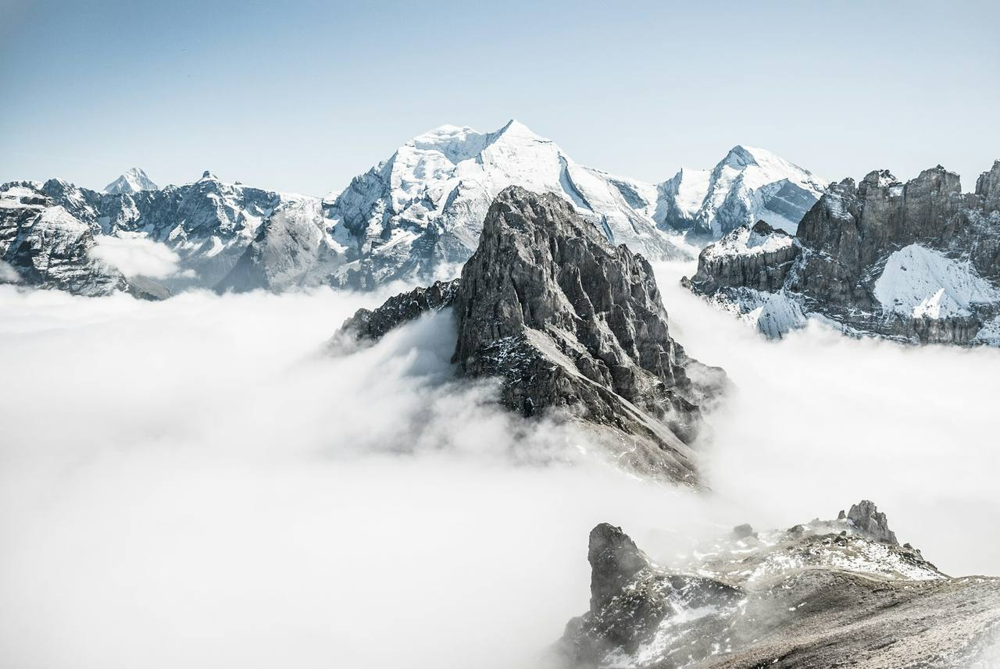
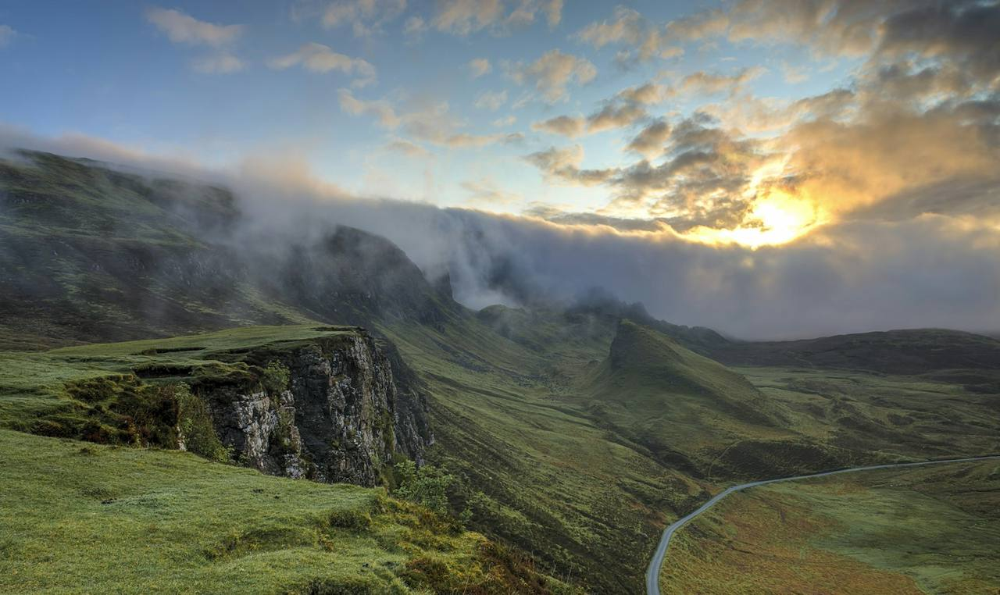
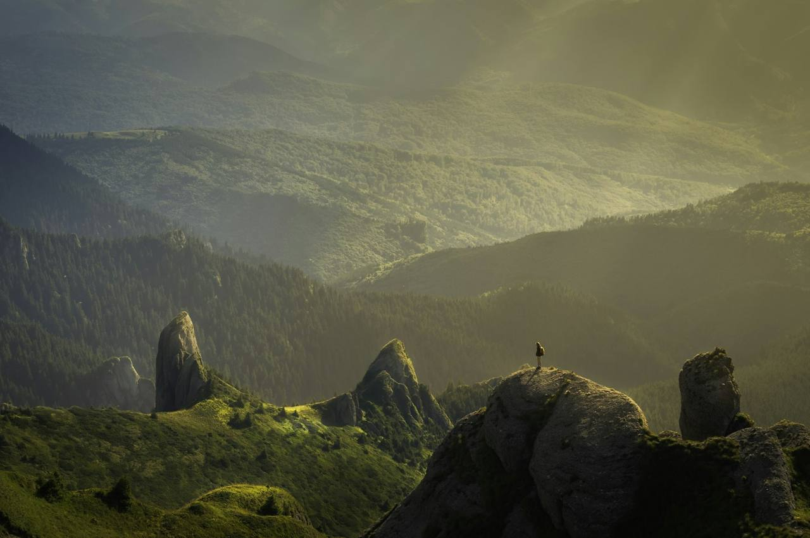
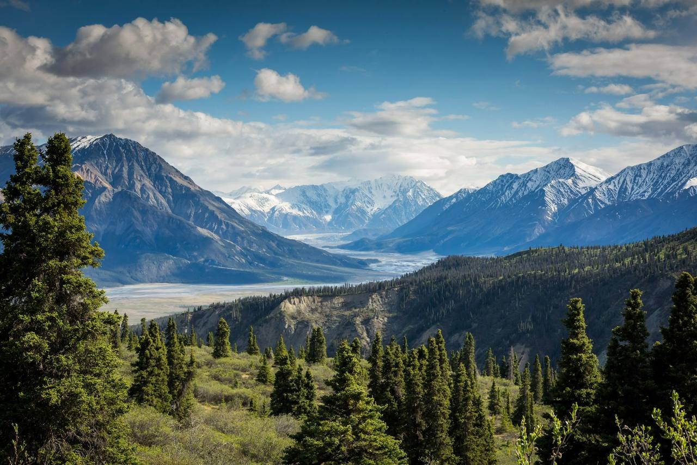
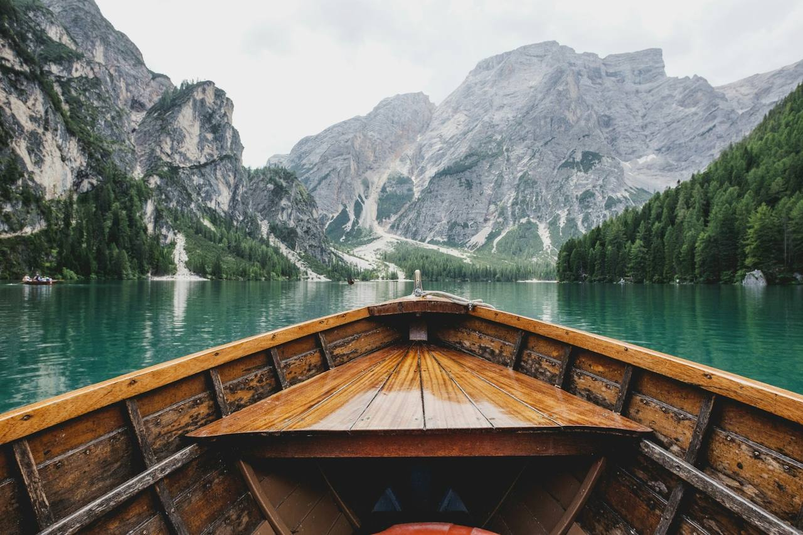
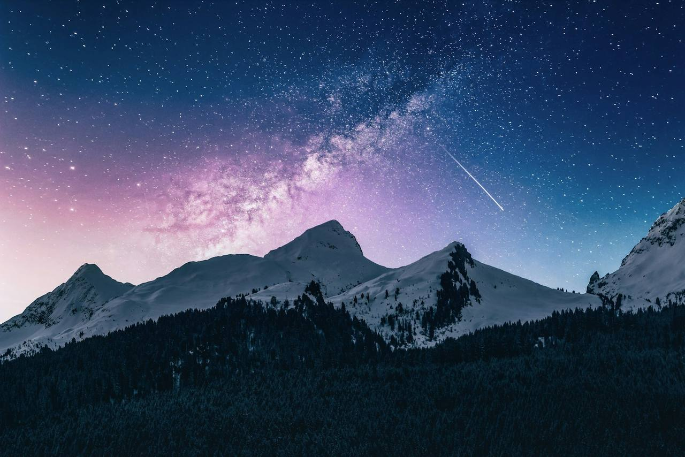

03 · Canterbury · Full day · Illustrative demo info
CANTERBURYAbove the Clouds
A guided day walk into the Canterbury high country: tussock basins, a rocky spine, and a 1,900-metre lookout timed for the morning the basin fills with cloud and the tops turn into islands.
The route
Start in tussock. Finish in sky.
The day is planned around one bet: leaving early enough to stand on the lookout while the basin below is still full of cloud. If the inversion doesn’t show, you still get a big alpine day, just with better visibility than promised.
Illustrative demo information
This is a fictional concept. Prices, routes and operating details are demo content only and describe no real service, certification or endorsement.
-
05:45
Pickup, Christchurch
An honest alarm clock. The van runs west while the sky behind you turns orange, and the guide briefs the day over the seats.
-
07:45
Basin trailhead, 720 m
Boots on beside a braided river flat. First hour climbs gently through matagouri and tussock as the sun clears the ridge.
-
09:30
Creek crossings & scarp
A dozen easy rock-hop crossings, then the slope steepens onto the scarp. Boots-test-your-sole territory. Poles help, spares are in the group kit.
-
11:00
The lookout, 1,900 m
The payoff: the whole basin under a rolling white tide, the tops standing in like islands. Lunch here is not rushed. Neither is the photographing.
-
12:30
Spine traverse
A gentle ridge wander to a second knoll, enough to feel like a journey but never exposed. Old snow patches linger into December some years.
-
14:00
Down and out
Descend the gully line, knees thankful for the poles, and roll out the last flat hour through golden grass back to the van.
-
16:00
Coffee, then the drive home
A high-country café stop on the way out, pies rated on a strict internal scale, and back in Christchurch by early evening.
The practical bit
What’s included, what you bring.
Included
- Lead guide for the full day
- Trekking poles and group emergency kit
- Hot drinks and a high-country lunch
- Transport from central Christchurch
- Pack list, weather updates and route notes
- Loan mitts and beanies for summit stops
- Group first aid and comms
You bring tick it off
0 / N packed
Season & weather: read this before you book
Above the Clouds runs November to March. This is real alpine terrain: summer snow, surface ice and 90 km/h northwesters are all normal. Every departure has a weather call by 6 pm the night before; if the tops are out of bounds we offer the lower basin walk, a reschedule or a refund. The inversion is common but never guaranteed. Anyone who promises otherwise is selling you something. Group size is capped at six for this route.
Meeting point
Christchurch at 05:45, or the basin car park at 07:45.
City pickup from a central stop, or meet at the trailhead if you’re already driving through the high country. The exact trailhead pin comes with your booking note, because unmarked access keeps the basin quiet.
- City pickup05:45 · central Christchurch stop confirmed on booking
- Self-drive2 hrs inland; 4WD not required, gravel road for the last 12 km
- Finish~18:00 back in Christchurch
- Weather callBy 6 pm the night before, every time
From the season
The evidence.







Before you ask
Straight answers.
How hard is this walk, really?
Honest label: moderate to hard. About 1,100 metres of climbing over roughly 14 kilometres, much of it off-track through tussock. If you hike occasionally and handle stairs without negotiating, you’re in range, and the pace is the slowest person’s pace.
What if the cloud doesn’t show?
Then you get a crystal-clear alpine day and the same lunch spot with 100-kilometre views. The inversion is a frequent guest, not a contract. We pick dates statistically likely to produce it and tell you the odds honestly.
Is it safe for confident beginners?
This is a demo concept, so take no assurance from this page. Within the fiction: the route is non-technical, stays off exposure, and the guide carries group emergency gear. The weather call exists precisely so that marginal days become no days.
Why is the group smaller, six rather than eight?
Alpine terrain moves at the speed of its slowest rope-length of patience. Six keeps the group tight on the scarp and leaves the tops quiet.
Can I bring my dog / drone / speaker?
No, no, and a firm no. Working stations and wildlife up here, and part of the product is the silence. You’ll thank us by the second knoll.
What’s the food situation?
A proper packed lunch, trail snacks and hot drinks from the stove. Dietary needs handled with a week’s notice. The enquiry form is the place to say so.
Enquire
Chase the cloud line.
Tell us your dates and how many are coming. We reply with availability, the route plan and an honest read on the inversion odds for your window.
- →Replies within two working days
- →No payment to enquire
- →Weather call by 6 pm the night before
- →Groups of 4+ can request private dates